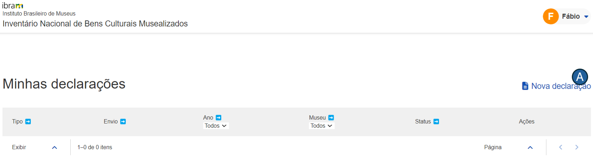
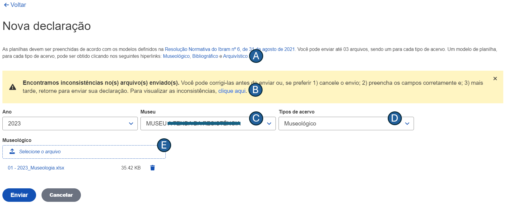
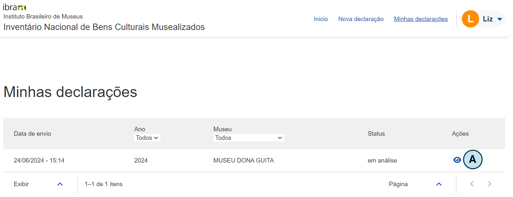
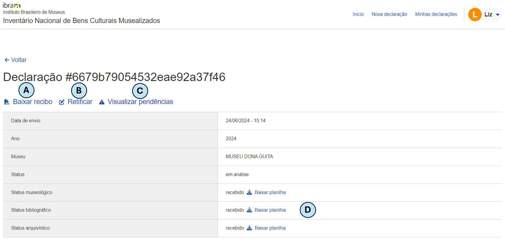

Manual do usuário
Introdução
Bem-vindo ao manual de usuário do módulo Envio de Declarações. O documento foi elaborado para fornecer uma orientação de como você pode utilizar as funcionalidades da ferramenta.
Esse módulo foi desenvolvido para permitir que museus informem ao Instituto Brasileiro de Museus (IBRAM) os bens que compõem os seus acervos. Por meio de uma interface intuitiva, o módulo visa simplificar o processo para envio de declaração dos bens musealizados.
Para facilitar o seu entendimento, o manual foi dividido em seções. Na seção "Ambiente", você encontrará informações sobre os requisitos técnicos e as configurações para o funcionamento do módulo. A seção "Como iniciar?" explica como você pode realizar o login e ter o seu primeiro acesso. Por fim, em "Funcionalidades", são detalhados os principais recursos disponíveis, incluindo instruções para as operações mais comuns.
Ambiente
O módulo de Envio de Declarações foi desenvolvido para ser executado em um ambiente web, garantindo que ele esteja acessível em todas as regiões do país. A seguir, estão descritos os requisitos necessários para o funcionamento adequado do sistema:
- Conexão com a internet: para acessar o módulo, é imprescindível que você possua uma conexão estável com a Internet;
- Dispositivo: a declaração pode ser enviada através de vários dispositivos tais como computadores desktop, laptops, tablets ou smartphones. Certifique-se de que seu dispositivo esteja em boas condições de funcionamento e com o antivírus atualizado;
- Configurações mínimas: 4 GB de memória RAM (ou superior) e, pelo menos, 500 MB disponíveis;
- Navegadores compatíveis: o módulo é compatível com os navegadores web mais populares. Portanto, recomenda-se a versão mais recente do Google Chrome ou do Mozilla Firefox ou do Safari.
Objetivos
Este material tem como objetivo fornecer instruções detalhadas sobre a operacionalização do módulo Envio de Declarações, desenvolvido pelo NOCS Lab, uma laboratório maker localizado no IFRN/Parnamirim. Os objetivos específicos deste documento incluem:
- Oferecer instruções claras para que os usuários possam operar o módulo da melhor forma;
- Garantir que os usuários utilizem as funcionalidades de forma intuitiva a fim de minimizar a curva de aprendizado; e
- Explicar as funcionalidades atuais do módulo, por meio de capturas de tela, para assegurar uma compreensão ideal.
Como iniciar?
Para acessar o módulo, siga os passos abaixo:
- Acessar o endereço eletrônico: abra seu navegador web favorito e visite o endereço eletrônico https://homologacao.inbcm.ifrn.tainacan.org;
- Página de login: na primeira página do portal, você verá a interface de login, conforme ilustrado na imagem abaixo:

Após preencher os campos "E-mail" e "Senha", pressione o botão "Entrar". Se suas credenciais tiverem sido informadas corretamente, você será redirecionado para a página principal da aplicação, como representado na imagem a seguir.

Nesta página, estão disponíveis as seguintes funcionalidades:
- Nova declaração (indicada pela letra "A"): permite o envio de uma nova declaração ou de uma declaração retificadora; e
- Minhas declarações (indicada pela letra "B"): permite que o usuário visualize as declarações enviadas.
Funcionalidades
Nesta seção, são apresentadas as principais funcionalidades do módulo Envio de Declarações. Elas estão divididas em duas subseções: Enviar declaração e Visualizar declarações enviadas.
Enviar declaração
De acordo com a Resolução Normativa nº 6, de 31 de agosto de 2021, os bens podem ser Museológico, Bibliográfico ou Arquivístico. Para cada um desses tipos, há um modelo de planilha na qual serão preenchidos os dados referentes aos bens.
Caso o usuário não possua os modelos das planilhas para preenchimento da declaração, é possível baixá-los clicando nos hiperlinks, representados pela letra "A" da figura abaixo. É importante destacar que o acervo deve ser preenchido, rigorosamente, conforme os modelos fornecidos. Caso contrário, o(s) arquivo(s) do acervo não será(ão) aceito(s).

Na lista suspensa, representada pela letra "C", o usuário deve informar de qual museu é a declaração correspondente. Não é necessário que seja enviada uma planilha para cada tipo de bem, no entanto, pelo menos uma delas é obrigatória. Há um campo para cada um dos tipos de bem (representados pelas letras "D", "E" e "F") em que o usuário deve informar a planilha a ser enviada.
Na imagem, percebe-se que foi exibida a seguinte mensagem de alerta: "Encontramos inconsistências no(s) arquivo(s) enviado(s). Você pode corrigi-las antes de enviar ou, se preferir 1) cancele o envio; 2) preencha os campos corretamente e; 3) mais tarde, retorne para enviar sua declaração. Para visualizar as inconsistências, clique aqui."
A mensagem ocorre porque há linha(s) na planilha em que, pelo menos, um campo obrigatório não foi informado. O sistema oferece uma opção (ver letra "B"), para que o usuário visualize qual(is) coluna(s) da(s) planilha(s) não foi(ram) preenchida(s).
Visualizar declarações
Nesta página, o módulo oferece funcionalidades como
- filtrar as declarações por ano e por museu; e
- detalhar a declaração enviada.
Para cada declaração enviada, são exibidas informações como
- data de envio;
- ano da declaração;
- nome do museu; e
- situação em que se encontra a declaração.
Clicando no ícone que é representado pela letra "A", como visto na figura abaixo, é possível visualizar o detalhamento da declaração: 
Na tela de detalhamento da declaração, como se vê na imagem abaixo, é possível baixar o recibo da declaração enviada (representado pela letra "A"), enviar uma declaração retificadora (letra "B" da figura) e visualizar as pendências (representado pela letra "C"). Nessa tela, também é possível baixar o(s) arquivo(s) enviado(s), como se vê na letra "D" da figura: 